1986
La leyenda de Shen Long
Una versión alternativa del primer encuentro de Goku con Bulma en la búsqueda de las Esferas del Dragón.
Antagonista: Rey GurumesDónde verlaMás de tres décadas de batallas en la gran pantalla.
Los enlaces “Dónde verla” consultan disponibilidad legal externa.
Una versión alternativa del primer encuentro de Goku con Bulma en la búsqueda de las Esferas del Dragón.
Antagonista: Rey GurumesDónde verla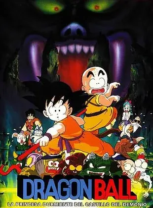
Goku y sus amigos exploran un castillo maldito en busca de una esfera y de una princesa hechizada.
Antagonista: LuciferDónde verla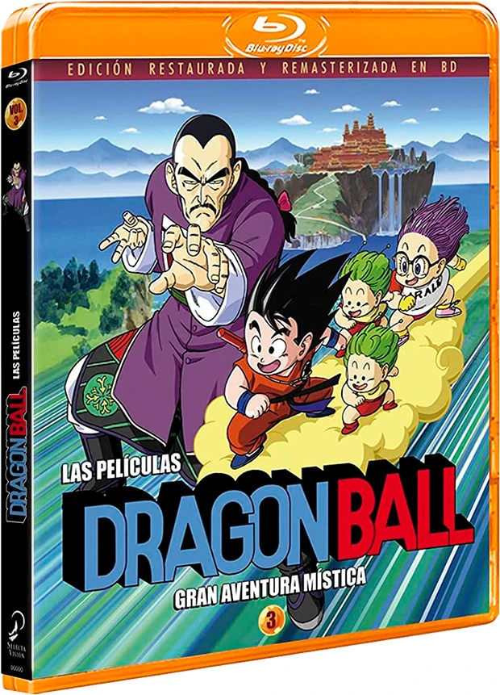
Un torneo organizado por un emperador caprichoso esconde una trama del ejército Red Ribbon.
Antagonista: General TaoDónde verla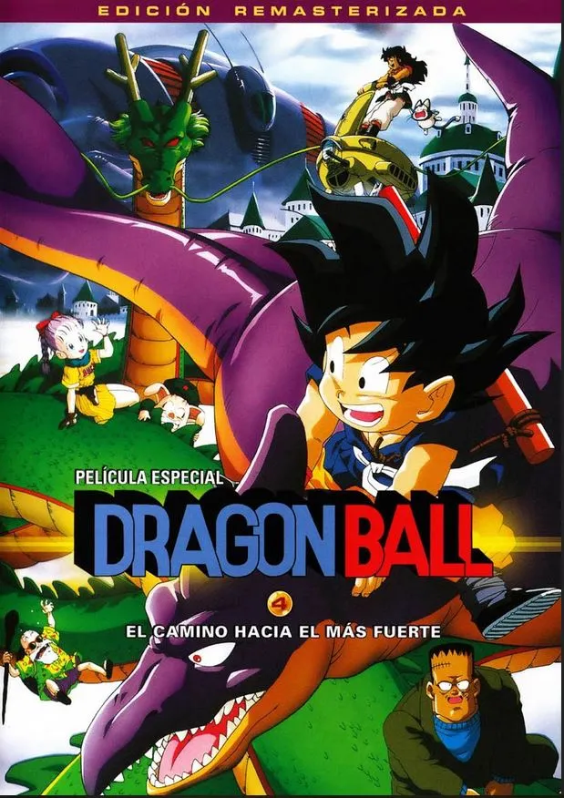
Un repaso condensado a la infancia de Goku, pensado como puerta de entrada al universo Dragon Ball.
Antagonista: Rey GasshanDónde verla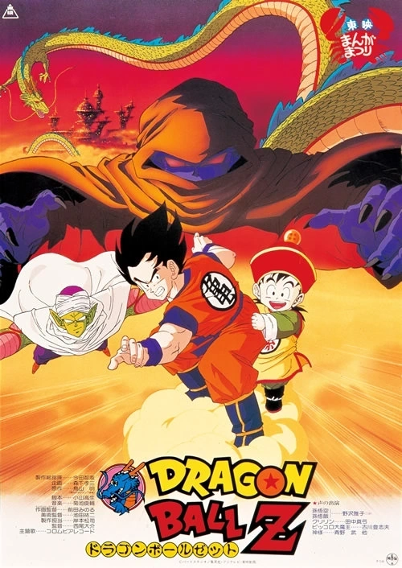
Un antiguo enemigo de Kamisama secuestra a Gohan para conseguir la inmortalidad.
Antagonista: Garlic Jr.Dónde verla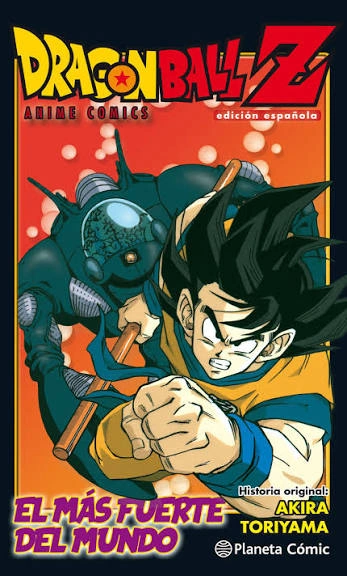
Un científico busca apoderarse del cuerpo de Goku para continuar sus experimentos.
Antagonista: Dr. WheeloDónde verla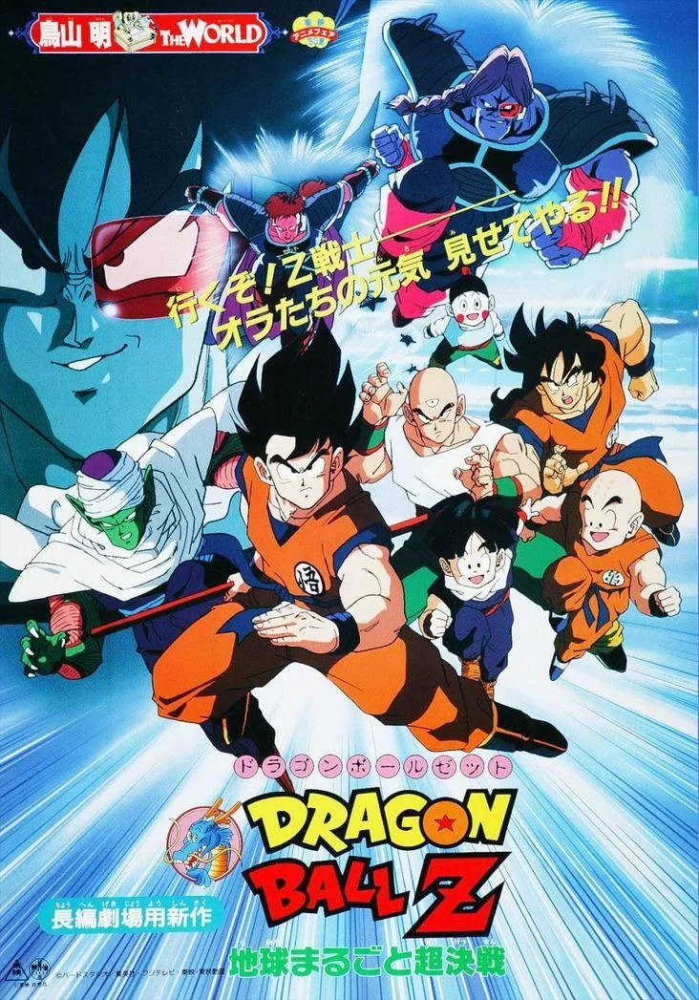
Un saiyajin de aspecto casi idéntico a Goku busca sembrar un árbol que drena la vida del planeta.
Antagonista: TurlesDónde verla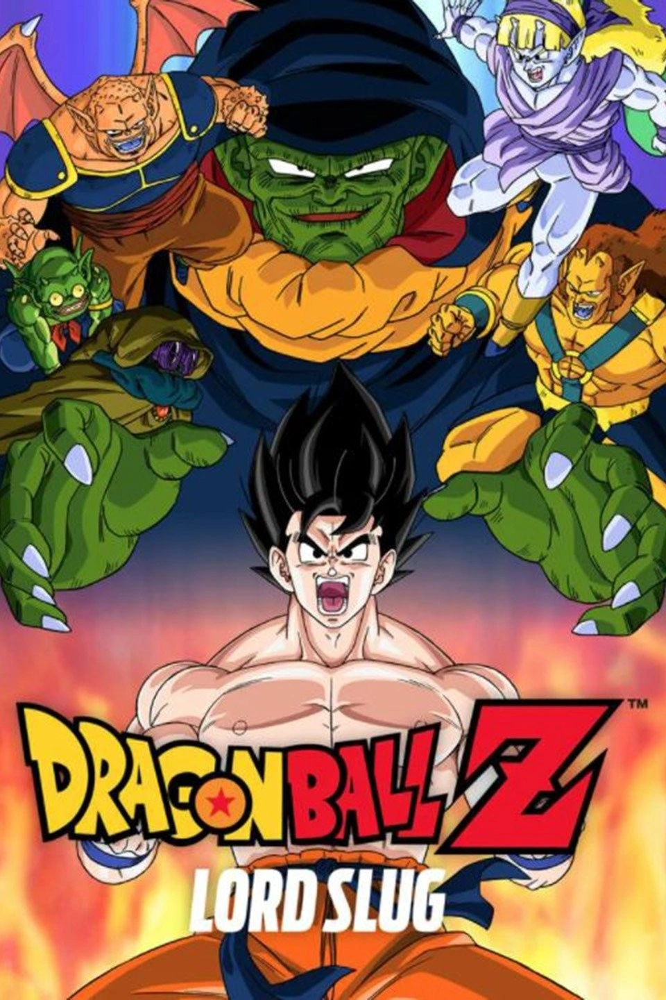
Un súper namekiano gigante ataca la Tierra buscando las Esferas del Dragón para recuperar su juventud.
Antagonista: Lord SlugDónde verla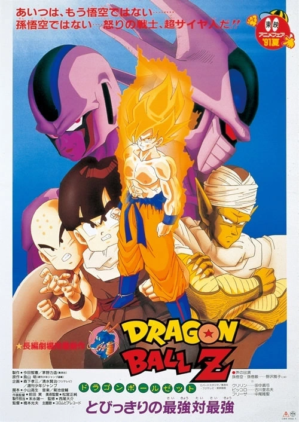
El hermano mayor de Freezer llega a la Tierra para vengar el honor de su familia.
Antagonista: CoolerDónde verla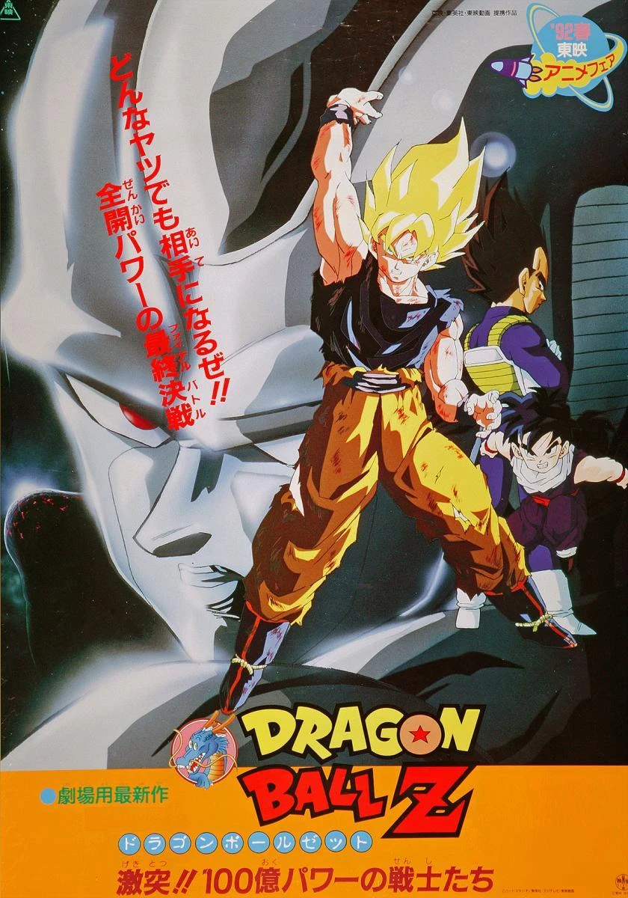
Reconstruido como una máquina, Cooler regresa para tomar el control de un planeta agrícola.
Antagonista: Cooler (Metal Cooler)Dónde verla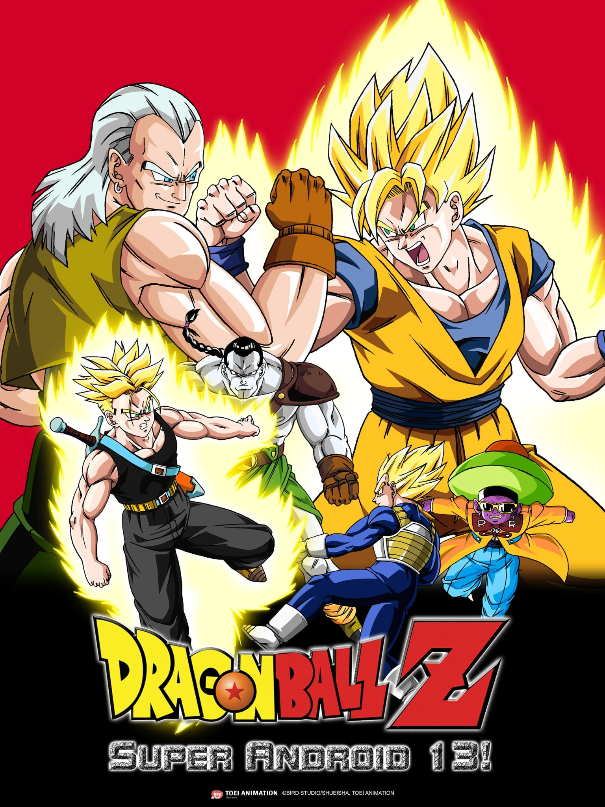
Restos del ejército Red Ribbon activan tres androides programados para eliminar a Goku.
Antagonista: Androide 13Dónde verla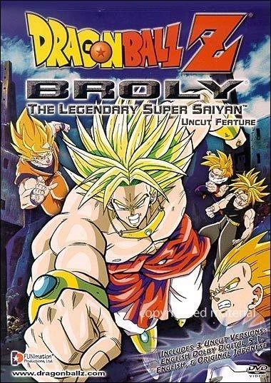
La primera aparición de Broly, un saiyajin nacido con un poder descomunal y un odio antiguo hacia Goku.
Antagonista: BrolyDónde verla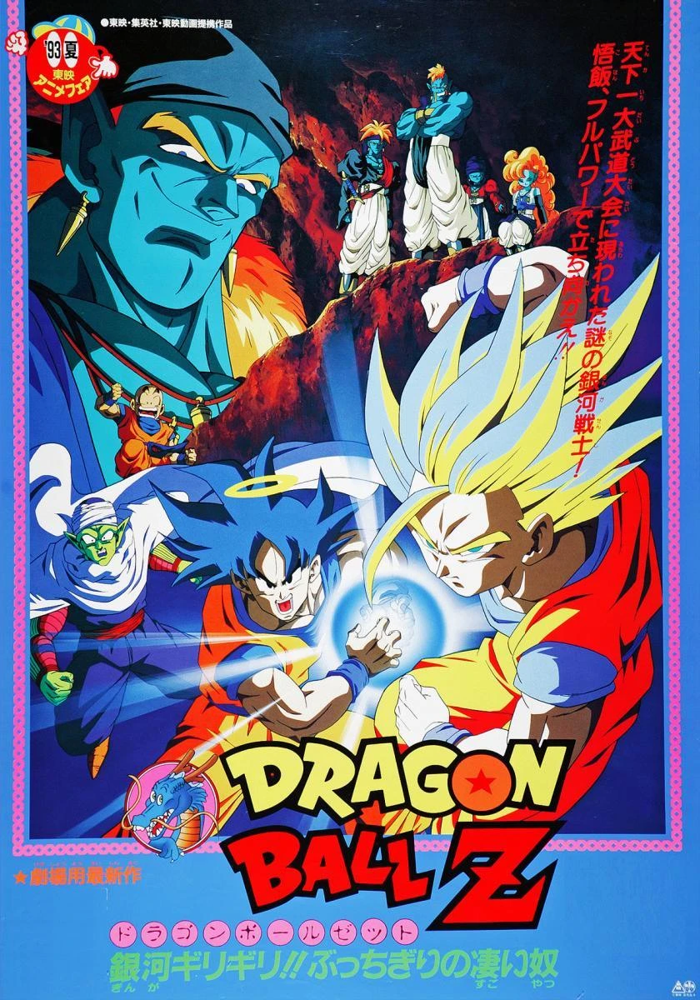
Un guerrero espacial sellado hace siglos despierta durante el Torneo de las Artes Marciales.
Antagonista: BojackDónde verla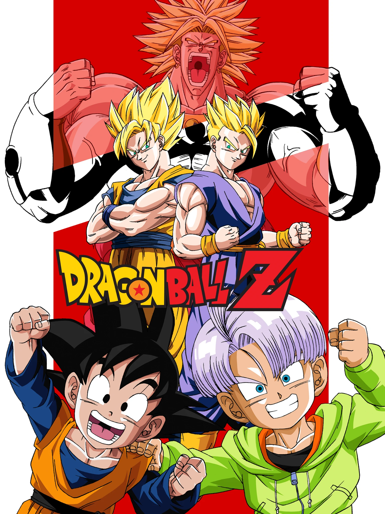
Broly reaparece y amenaza a Gohan, Goten y Trunks en una isla helada.
Antagonista: BrolyDónde verla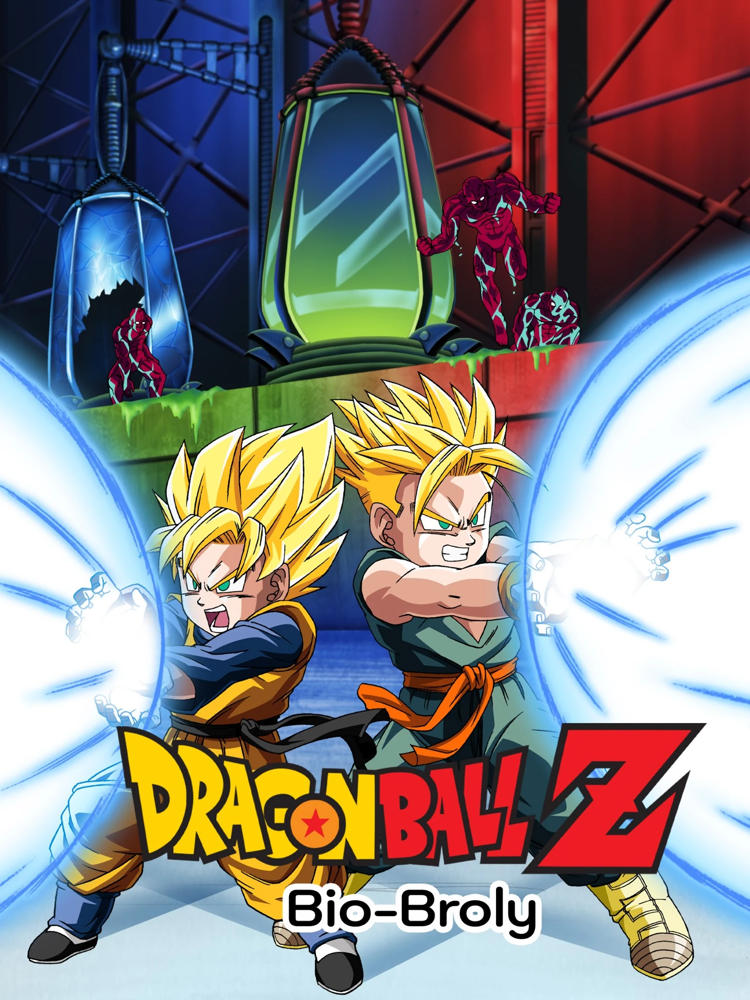
Un clon biológico de Broly es creado por un científico rencoroso con Mr. Satán.
Antagonista: Bio-BrolyDónde verla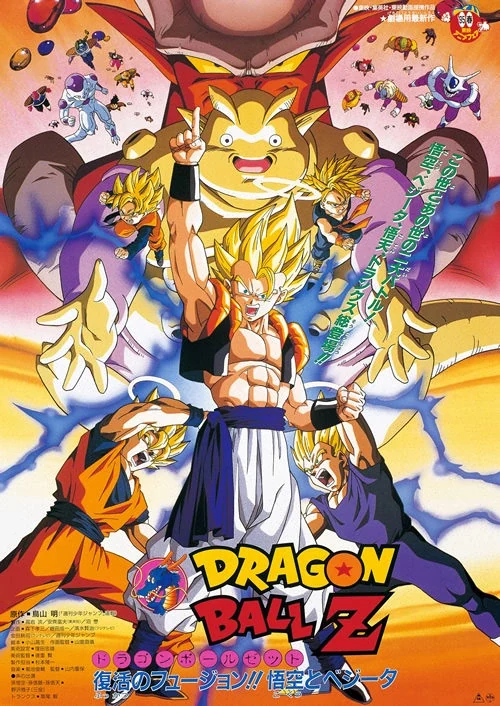
Un ser maligno nacido del Más Allá amenaza con fusionar los mundos vivo y muerto.
Antagonista: JanembaDónde verla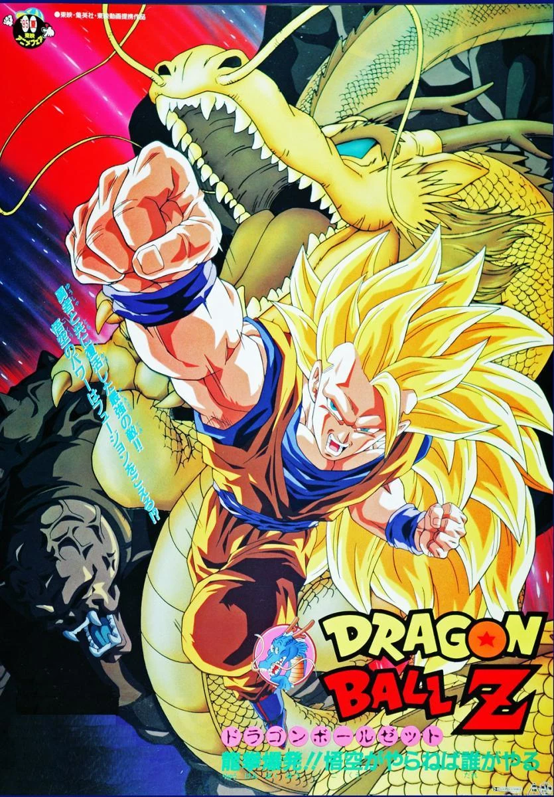
Un ser liberado de una vasija oculta esconde un plan para desatar a un dragón oscuro.
Antagonista: Hoi y el Dragón OscuroDónde verla
El Dios de la Destrucción Beerus despierta y pone a prueba a Goku en busca de un Super Saiyajin Dios.
Antagonista: BeerusDónde verla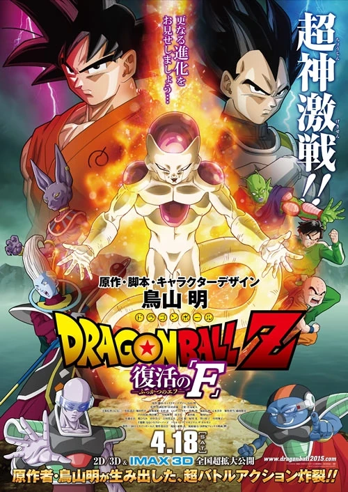
Revivido con las Esferas del Dragón, Freezer entrena para vengarse y lidera una nueva invasión.
Antagonista: FreezerDónde verla
El origen de Broly se reescribe: un saiyajin exiliado con un poder que desafía todo lo conocido hasta ahora.
Antagonista: BrolyDónde verla
El Ejército Red Ribbon renace y crea a los Gamma, obligando a Piccolo y Gohan a tomar el protagonismo.
Antagonista: Gamma 1, Gamma 2 y MagentaDónde verlaNota: esta lista incluye únicamente los 21 largometrajes animados oficiales de Toei Animation. No incluye especiales de TV, OVAs, cortos ni el largometraje live-action Dragonball Evolution (2009), que no forma parte de la continuidad ni de la filmografía animada.